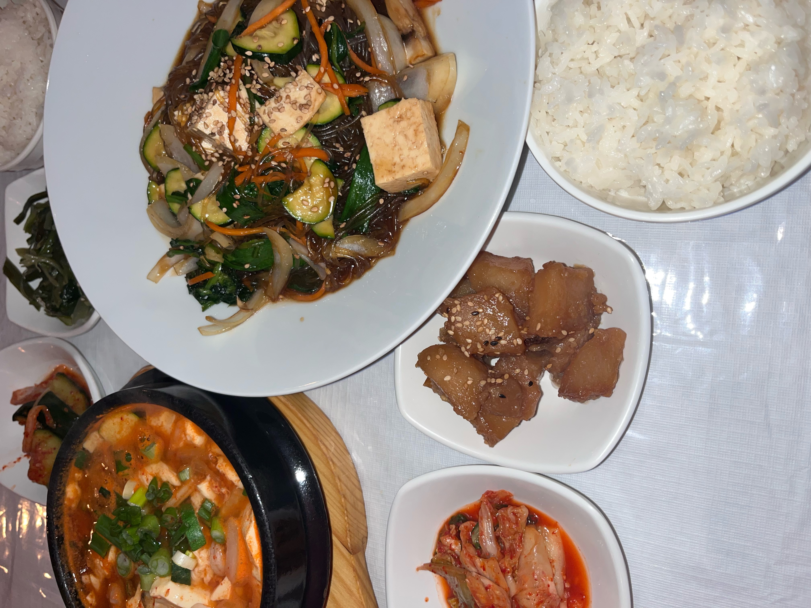
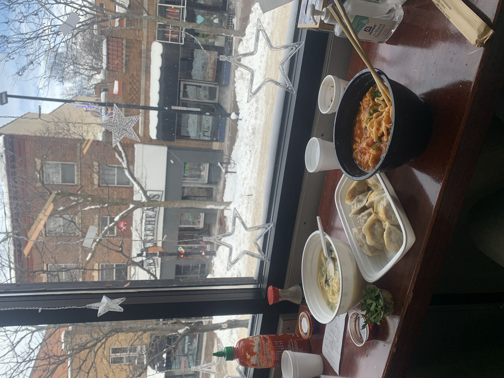
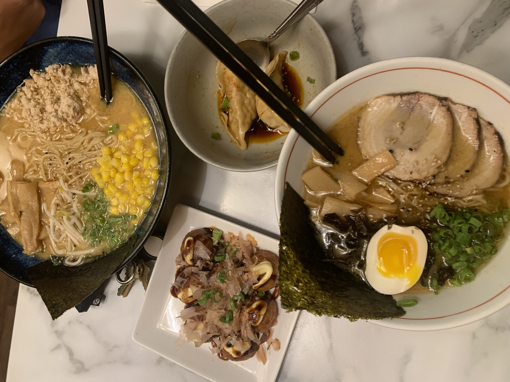
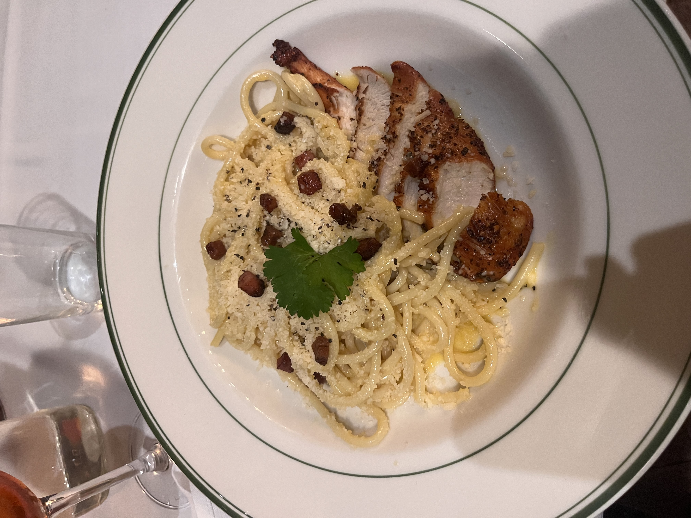

Sol's on the Square - Korean Cuisine
Sol’s on the Square delivers authentic Korean dishes with rich flavors, offering a memorable dining experience in downtown Madison. Highlights include the Bibimbap and Kimchi.
Chen's Dumpling Restaurant - Chinese Cuisine
Chen's Dumpling is known for its fresh, handmade dumplings and comforting Chinese dishes. A top spot for a quick bite that feels like home-cooked comfort.
Strings Ramen - Japanese Cuisine
Strings Ramen offers an immersive Japanese ramen experience with perfectly balanced broths and tender noodles, making it a must-try for ramen lovers in Madison.
d'vino - Italian Cuisine
d'vino is an upscale Italian restaurant offering handmade pasta and exquisite wines. The Carbonara, made with rich, creamy sauce, is a standout dish that showcases authentic Italian flavors.